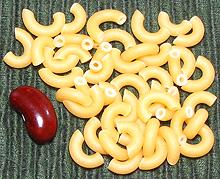
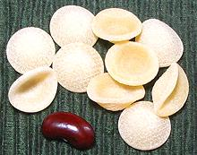
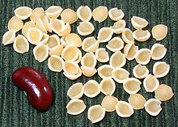
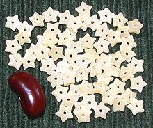
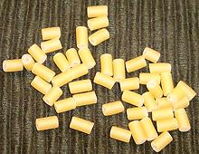

SAFARI
Users
Numbers:
The numbers given here are CloveGarden numbers and have no relation to Italian die numbers, which vary with manufacturer.Ancini di Pepe
- [005]
This is a small soup pasta made from cylinders cut to a very short
length so the length is about the same as the diameter. These were
0.90 inch diameter by 0.90 inch long.
Alfabeto
- [066; Alphabets]
This is a small soup pasta particularly popular for children's soups.
For the photo specimens, "M" size was 0.17 inch wide, 0.22 inch high
and 0.08 inch thick.
Anelli
Small ring shaped pastas used in salads and soups. Larger than anelletti.
Anelletti
- [267; tiny rings]
These tiny rings are intended for use in soups. The photo
specimens were 0.48 inch diameter, 0.105 inch thick and had a wall
thickness of 0.85 inch. These were made in Italy but packaged
"private label" for Trader Joe's.
Anellini
- [013; very tiny rings]
These very tiny rings are intended for use in soups. The photo
specimens were 0.23 inch diameter and 0.075 inch thick.
Anellonii
- [298; Rings]
These are generally used in soups. The photo specimens were 0.50 inch
diameter, 0.115 inch thick and had a wall thickness of 0.95 inch
Astri
- Small soup stars - see Stelline.Avena
- see Orzo.Caracolito
- Spanish for tiny soup shells, see Perline.Coralli / Corallini
- [170]Very tiny short soup pasta tubes. Corallini is about 0.14 inch diameter by 0.18 inch long. Coralli is a little larger.
Ditalini
- [171; Tiny Thimbles]
Under magnification these proved to be ditalini rigate. The photo
specimens are very tiny, 0.19 inch long, 0.18 inch diameter. Good
particularly for soups.
Elbows, Tiny
- [270]
These exceptionally small elbows are fine for soups and salads. The
photo specimens were 0.46 inch across and 0.12 inch diameter.
Farfallini
- [084; Soup Bows]
This seems rather confused. People call these "Farfallini", but that
would imply the same shape as Farfalle, but they are quite different.
Perhaps they are a tiny variety of Farfalle Rotonde (farfalle with
round ends - very rare - but I found a Turkish company that does call
these by that name). Most likely these should actually have been
labeled Tripolini. Lots of manufacturers admit to
making Tripolini in this shape but few list a Farfallini at all.
These are for soup, about 0.70 inch long.
Filini
- [165]
Tiny soup threads. The photo specimens were about 0.30 inch diameter
and 0.50 inch long.
Fregola Sarda
- [120; Fregula]
"Sardinian Couscous" (0.09 to 0.15" diameter) is though by some to
be the ancestor of all Italian dried pastas. Sardinia maintained trade
with North Africa for much of its history, so this form may have been
brought from there, or taken from there to Africa. Unlike other Italian
pastas it is made from a coarser grind of semolina and is lightly oven
toasted.
Funghetti
- [231; Tiny Mushrooms]
This is one of my favorite forms of soup pasta. Shaped like tiny
mushrooms with stems, the photo specimens were 0.41 inch across the
cap and 0.28 inch tall.
Gnocchetti
- [067; Gnocchi Picoli]A smaller version of the Gnocchi pasta. 0.75 inch long, 0.50 inch wide.
Grattoni
- [174]Tiny diamond shaped soup pasta. Some brands are made as egg noodles.
Margheritine
- [073]A smaller version of Margherite (daisies) for use in soups.
Occhi di Pernice
- [185]Tiny rings.
Orecchiette Piccole
[306] These are much like regular Orecchiette, but significantly smaller (the piccole part). The photo specimens were 0.62 inch diameter and 0.26 inch deep.
Orzo
- [019; Barley, Avena, Semi di Cicoria, Semi d'orzo, Risetto, Chicchi di Riso, Semini, Puntine, Punte d'ago, Armelline, Occhi di Giudeo, Armellette, Puntalette, Cicorietta, Risetto, Cicorie]
To the North American eye, these don't look at all like barley, but
actually, unhulled barley is that shape. What you see sold as "barley"
here has been husked and heavily milled (pearled). This pasta is often
used to replace rice, as in a rice salad, and is interchangeable with
Rosmarino. The photo specimens
were 0.42 inch long, 0.12 inch wide and 0.06 inch thick.
Pastina
- [204]Tiny soup stars, just .105" across, very popular in children's soups. Also used as a generic term for tiny soup pasta (Pastine)
Pastine
- [186]A generic name for any tiny soup pastas.
Pearl Pasta
- [187]Tiny spheres a little larger than Acini di Pepe.
Peperina
- [156; Peppercorns]
Tiny cylinders which cook to about the size of peppercorns. Used mainly
in thin soups. The photo specimens were 0.080 inch diameter and random
lengths, most shorter than 0.18 inch.
Perline
- [266; Caracolito (Spanish)]
These are actually the very smallest version of shells (Conchiglie) and
are intended for use in soups. The photo specimens were 0.27 inch long
and 0.22 inch wide.
Rici
- [304; Rice]
These are much like Orzo but significantly smaller.
Their main use would be as a substitute for rice in soups. The photo
specimens were 0.25 inch long, 0.105 inch wide and 0.060 inch thick.
Rosmarino
- [268]
Named for its resemblance to the leaves of the rosemary plant (yes
there are some varieties with leaves that short), this pasta is
interchangeable Orzo. It is often used to replace
rice, as in replacing the rice in a salad with pasta. The photo
specimens were 0.38 inch long, 0.125 inch wide and 0.060 inch
thick.
Ruedas
- [276; Tiny Wagon Wheels]
I'm using the Spanish name here because I don't yet know what they call
this tiny size in Italy. These were made in Mexico, but I find it
inconceivable they don't have them in Italy. These are good for soup,
0.38 inch diameter, 0.11 inch thick. Yes, the Mexican manufacturer
used durum semolina.
Semi di Cicoria
- Chicory SeedsA very tiny rice shaped pasta (.245" x .090") used in thin soups.
Semi di Melone
- [299: Melon Seeds; Semilla de Melón (Spanish)]
Named for its resemblance to the seeds of a melon, this pasta is used
for salads and soups similarly to Orzo. The photo
specimens were 0.23 inch long, 0.13 inch wide and 0.060 inch
thick.
Semilla de Melón
- [020: Melon Seeds]
I've used the Spanish name here because these were made in Mexico.
they are much larger than the 299 Semi di Melone,
but I list them here because it is unlikely the Italians don't have
this size - the dies probably came from Italy. This is not to say that
Mexicans can't make their own dies, but why should they? This pasta is
used for salads and soups similarly to Orzo. The
photo specimens were 0.27 inch long, 0.16 inch wide and 0.050 inch
thick.
Stelle
- [178; Stars]Stars, larger than Stelline.
Stelline
- [117; Tiny Stars, Stelle, Stellettine, Astri, Fiori di Sambuco]
This very tiny star shaped pasta is intended for use in soups. The
photo specimens were 0.23 inch across the points and 0.070 inch
thick.
Stortini
- [180 ("f" Form); 302 (elbow form)]Here we have another major conflict. Some sites, and major Italian pasta maker De Cecco (founded 1886) say these have the form of an italic lower case f. Other sites and manufacturers say it is a soup sized elbow, similar to our #270, or even a little larger.
Tempestina
- [188]
This is about as small as pasta gets, similar in size to Moroccan
cusecuse. It is used as a soup pasta. The photo specimens were tiny
cylinders, 0.075 inch diameter and 0.075 inch long.
Tripolini
- [181; Soup Bows]
Tiny soup bows. These are sometimes called "Farfallini" but that
seems improper. Most manufacturers list this as "Tripolini" and
don't confess to making a Farfallini at all. These are for soup,
about 0.70 inch long.
Tubetti
- [182]Very short smooth tubes, similar to #269 below except without ridges. These are used for salads and thicker soups.
Tubettini
- [126]
Very tiny tubes, about as small as they can get and still have a hole
down the center. These are used for soups. The photo specimens were
0.130 inch diameter and 0.225 inch long.